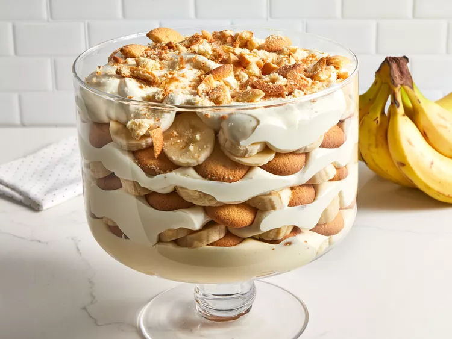

Banana Pudding

photo: Dotdash Meredith Food Studios
Description
A southern delicacy, banana pudding is an refreshing treat in the sweltering hot summers. You don't want anything warm or too heavy on the stomach in the middle of a brutal southern summer. But sometimes you just need a sweet treat, and there's no ice cream in sight due to the risk of melting. Or you're looking for something a little more on the "healthy" side. Hey, its got fruit in it!
Banana pudding is an easy dump and go pudding recipe, no fancy appliances or tools required. It's easily finished within 30 minutes, though it's definitely suggested to let it chill in the fridge for at least an hour or two before serving. Warm pudding isn't good pudding! You can also get fancy with layering the pudding ingredients if you're serving for an event.
Ingredients
- Approx. 3 cups cold milk (however much your pudding calls for in its instructions)
- 1 (5 ounce) package instant pudding mix, vanilla or banana
- 1 (14 ounce) can sweetended condensed milk
- 1 tablespoon vanilla extract
- 1 (12 ounce) container frozen whipped topping, thawed
- 1 (16 ounce) package vanilla wafers, about half crushed and half kept whole
- Sliced bananas, to taste (suggested - 8 medium bananas)
Steps
- Prepare pudding to box instructions. The average pudding usually calls for these instructions:
- Pour 3 cups of cold milk into a bowl.
- Add pudding mix. Beat until well-blended with a wire whisk, rotary beater or electric mixer at medium-low speed, about 2 minutes.
- Let pudding set for 5 minutes.
- Stir in condensed milk and vanilla.
- Fold in whipped topping.
- Fold in crushed wafers and bananas.
- Top with whole wafers.
- Serve or chill in the fridge.